PRZEÅ�OM W ODBUDOWIE STAWÓW! 10 LAT BADAŃ ZOSTAÅ�O ZAKOŃCZONYCH SUKCESEM. Lekarz z Warszawy stworzyÅ‚ preparat który regeneruje stawy i Å‚agodzi ból już po jednej kuracji!
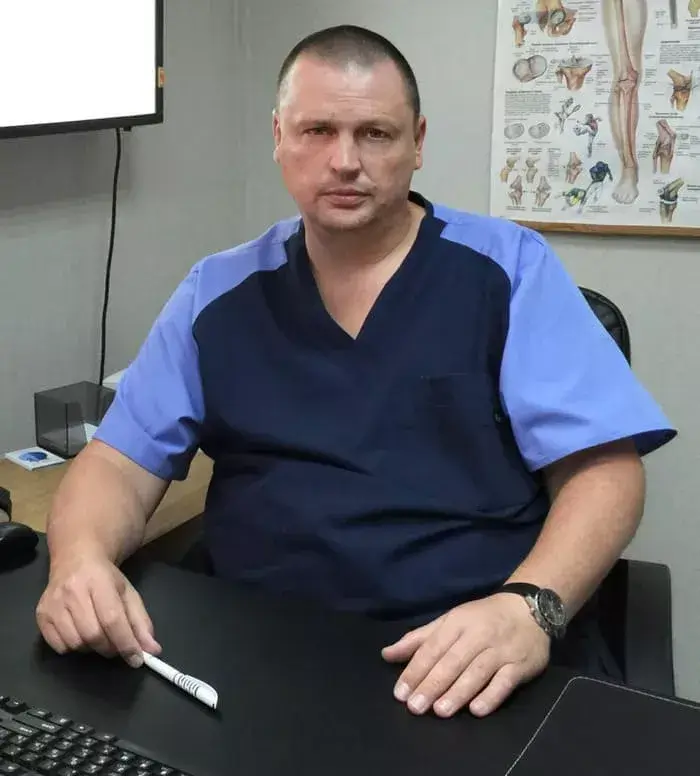Polska sÅ‚użba zdrowia aktywnie angażuje siÄ™ w zastÄ™powanie importu - dziÅ› jest to wymóg czasu. Krajowi producenci majÄ… już niezbÄ™dne osiÄ…gniÄ™cia w dziedzinie odbudowy stawów. Co wiÄ™cej, obecnie istnieje produkt, który jest w stanie nie tylko konkurować z próbkami wiodÄ…cych firm zagranicznych, ale także stać siÄ™ najlepszym na Å›wiecie pod wzglÄ™dem jakoÅ›ci, wydajnoÅ›ci, bezpieczeÅ„stwa i ceny.
Paweł Gajewski, traumatolog i chirurg ortopeda w szpitalu regionalnym oraz badacz w Centrum Artroskopii w Warszawie, opowiedział o swoim doświadczeniu w tworzeniu i korzystaniu z tego wyjątkowego preaparu, wykorzystując przypadek z własnej praktyki.
Przeczytajcie artykuł do końca, a dowiecie się:
- Jakie objawy wskazują na to, że stawy zamieniają się w proszek i nadszedł czas, aby bić na alarm?
- Jak uchronić siÄ™ przed niepeÅ‚nosprawnoÅ›ciÄ… w chorobach stawów, jeÅ›li Å›rodki farmaceutyczne nie pomagajÄ…?
- Czy możliwe jest pozbycie siÄ™ zapalenia stawów, choroby zwyrodnieniowej stawów, reumatyzmu i innych problemów ze stawami w domu, bez operacji i kosztownych zabiegów?
- Jak nazywa siÄ™ nowoczesny naukowy Å›rodek na pozbycie siÄ™ chorób stawów, peÅ‚nÄ… regeneracjÄ™ organizmu i dlaczego nie można go kupić w aptekach?
Dwa miesiÄ…ce temu zgÅ‚osiÅ‚a siÄ™ do mnie 58-letnia pacjentka,Teresa Pawlikowska. SkarżyÅ‚a siÄ™ na bóle stawów. Po raz pierwszy poczuÅ‚a nieprzyjemne doznania wiele lat temu. Nie pamiÄ™taÅ‚a niczego, co mogÅ‚oby wywoÅ‚ać ból w tym okresie: żadnych urazów ani upadków.
Pacjentka zgÅ‚osiÅ‚a siÄ™ na wizytÄ™ z polecenia chirurga, który przeprowadziÅ‚ operacjÄ™ jej dolnej części pleców. Po operacji ból pleców ustÄ…piÅ‚. Pani Teresa zauważyÅ‚a, że pojawiÅ‚ siÄ™ kolejny ból, ale w nogach i miednicy. Najprawdopodobniej byÅ‚ tam już wczeÅ›niej, ale z powodu pleców zszedÅ‚ na dalszy plan.
Kobieta sama zgÅ‚osiÅ‚a siÄ™ na wstÄ™pne badanie, ale od razu zauważyÅ‚em, że utyka. Badanie wykazaÅ‚o blok mięśniowy oraz znieksztaÅ‚cenie stawów. PotwierdziliÅ›my diagnozÄ™ za pomocÄ… zdjÄ™cia rentgenowskiego, które wykazaÅ‚o zapalenie bÅ‚ony maziowej i stan zapalny wokóÅ‚ stawu.
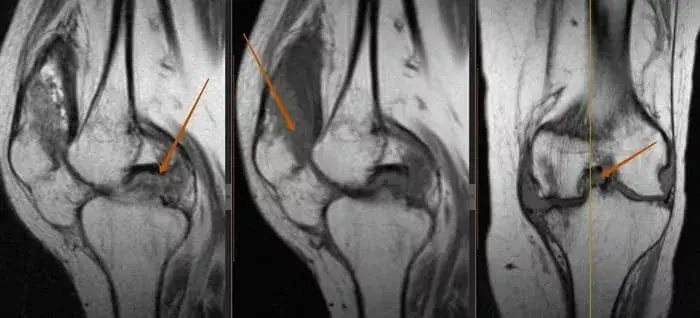NastÄ™pnie Pani Teresa przyznaÅ‚a, że przeszÅ‚a zabiegi fizjoterapii i blokady Å›ródstawowe. Nie chciaÅ‚a nic mówić, ponieważ wydaÅ‚a wszystkie swoje oszczÄ™dnoÅ›ci na zachodnie Å›rodki i wyjazdy do prywatnych klinik, a teraz spÅ‚aca również kredyt.
Plan naprawczy obejmowaÅ‚ kilka zastrzyków, co nie byÅ‚o Å‚atwe. Zastrzyki zostaÅ‚y wyprodukowane za granicÄ… i obecnie nie sÄ… dostÄ™pne w Polsce. Leczenie nigdy nie zostaÅ‚o zakoÅ„czone, a jej plecy znów zaczęły boleć po operacji. Ponadto kobieta chodziÅ‚a z laskÄ… ortopedycznÄ… z podpórkÄ… pod Å‚okieć, co spowodowaÅ‚o ogromny ból, który jeszcze bardziej pogorszyÅ‚ sytuacjÄ™.
Jako lekarz byÅ‚em oburzony! Nie mogÅ‚em znieść widoku tej biednej kobiety cierpiÄ…cej przez wiele lat. RyzykujÄ…c wÅ‚asnÄ… reputacjÄ™, zasugerowaÅ‚em jej rozpoczÄ™cie kuracji nowym preparatem, nad którym pracowaÅ‚em od ponad 10 lat. WÅ‚aÅ›nie przechodziÅ‚ on ostatnie etapy testów i byÅ‚ o krok od otrzymania certyfikatu jakoÅ›ci.
Jako student uniwersytetu postanowiÅ‚em poÅ›wiÄ™cić swoje życie na znalezienie skutecznego preparatu na choroby stawów. Wszystko dlatego, że mój ojciec zmarÅ‚, gdy byÅ‚em jeszcze chÅ‚opcem. ZmarÅ‚ z powodu powikÅ‚aÅ„ reumatoidalnego zapalenia stawów.
W naszym regionie od dawna wiadomo, że bóle stawów dobrze leczy siÄ™ preparatami na bazie arnica montana. Jednak dużo czasu zajęło mi stworzenie unikalnej formuÅ‚y, która nie tylko Å‚agodzi ból, ale także raz na zawsze przywraca pacjentowi peÅ‚niÄ™ życia.
Jest aktywne wykorzystanie w medycynie wykazuje skuteczność od wielu lat:
- w preparatach tonizujÄ…cych: arnica montana zapewnia wzrost ogólnej wytrzymaÅ‚oÅ›ci, poprawia aktywność fizycznÄ… i utrzymuje ogólny stan zdrowia;
- w urologii i andrologii: kolagenu jest tradycyjnie uważane za afrodyzjak, a jego stosowanie wiąże się ze wsparciem dla zdrowia mężczyzn, w tym zwiększoną potencją i poprawą funkcji seksualnych;
- stymulowanie układu odpornościowego: zwiększa jego odporność, wzmacniając organizm.
A co najważniejsze, arnica montana zawiera substancje, które pomagajÄ… szybko zregenerować siÄ™ po najcięższych operacjach.
Moja zastrzeżona formuÅ‚a nowego Å›rodka, który może przynieść ulgÄ™ każdemu pacjentowi z problemami stawów bez operacji, opiera siÄ™ na poÅ‚Ä…czeniu unikalnych naturalnych skÅ‚adników. Åšrodek jest w postaci piguÅ‚ka. Ma inny wpÅ‚yw na bolesne stawy, przenikajÄ…c bezpoÅ›rednio do gÄ…bczastej substancji koÅ›ci, tkanki, w której znajduje siÄ™ czerwony szpik, bezpoÅ›rednio wpÅ‚ywajÄ…c na centrum bólu.
Dwa miesiÄ…ce później wykonano rezonans magnetyczny Pani Teresie Nowy obraz pokazaÅ‚ uderzajÄ…co przyjemne rezultaty: kość zaczęła przybierać swój naturalny, zdrowy wyglÄ…d!

Już po jednej kuracji z użyciem piguÅ‚ka kobieta zauważyÅ‚a poprawÄ™, a jej nastrój wyraźnie siÄ™ zmieniÅ‚. Pani Teresa przyszÅ‚a do mnie bez utykania, co bardzo mnie ucieszyÅ‚o. Nawet ból poczÄ…tkowy zniknÄ…Å‚/
Wielu naukowców i lekarzy wie teraz o moim rozwoju. Tak, nadal trudno jest wprowadzić go do masowej produkcji. Jest wiele biurokratycznych zawiÅ‚oÅ›ci. UdaÅ‚o mi siÄ™ dojść do porozumienia z jednym producentem dziÄ™ki znanemu lekarzowi, Adamowi Mazurkowi. WspieraÅ‚ mnie, ponieważ, jak wielu ludzi, wierzy w naszÄ… medycynÄ™. Teraz wiem na pewno, że sytuacja bÄ™dzie siÄ™ zmieniać w pozytywnym kierunku.
Moim celem jest nie tylko stworzenie skutecznego preparau, ale także udostÄ™pnienie go każdemu. Ludzie nie powinni cierpieć z powodu bólu stawów. Mój lek ma na celu szybkie i skuteczne rozwiÄ…zanie tego problemu.
SpotkaliÅ›my siÄ™ ze sÅ‚ynnym rosyjskim lekarzem Adamem Mazurkiem i porozmawialiÅ›my o chorobach stawów i dowiedzieliÅ›my siÄ™, dlaczego zdecydowaÅ‚ siÄ™ wesprzeć lekarza z Warszawy.
Adam Mazurek opowiedziaÅ‚, jak uratować siÄ™ przed wózkiem inwalidzkim i szybko pozbyć siÄ™ artrozy, zapalenia stawów, osteochondrozy i innych chorób stawów.
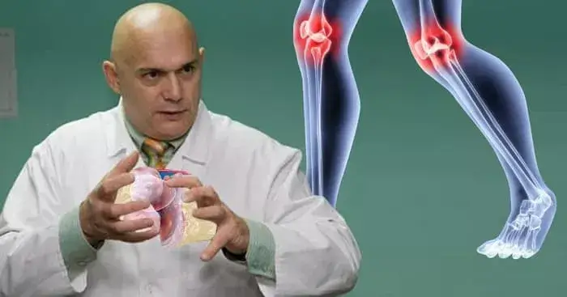 Adam Mazurek
Doktor nauk medycznych, autor metod kinezyterapii
prewencyjnej i prac dotyczących leczenia układu mięśniowo-szkieletowego.
- Nasz wywiad z lekarzem z Warszawy zaszokowaÅ‚ wiele osób w kraju. PaweÅ‚ Gajewski powiedziaÅ‚, że to Pan go wspiera i pomaga promować unikalne piguÅ‚ka, które tworzy od 10 lat. Czy to prawda?
- Ah, PaweÅ‚!? Tak, tak, wielki naukowiec i profesjonalista. OczywiÅ›cie, że to prawda! Jak mógÅ‚bym mu odmówić? StworzyÅ‚ piguÅ‚ka, które nie majÄ… odpowiednika na Å›wiecie!
W tamtym czasie, a także teraz, byÅ‚em w 100% pewien, że jego rozwój to przyszÅ‚ość. I nie sÄ… to puste sÅ‚owa, ja również braÅ‚em czynny udziaÅ‚ w badaniach, a teraz polecam ten produkt moim pacjentom.
W Polsce ludzie nie sÄ… gotowi poÅ›wiÄ™cać wystarczajÄ…co dużo uwagi swojemu zdrowiu. Pacjenci znoszÄ… to do ostatniej chwili i przychodzÄ… do mnie, gdy sÄ… wyczerpani bólem i stracili możliwość normalnego życia. W koÅ„cu o wiele Å‚atwiej jest pójść do apteki, kupić Å›rodek przeciwbólowy, posmarować kilka maÅ›ci na bolÄ…cy staw, a nastÄ™pnie wrócić do ogrodu, do pracy!
PamiÄ™tajcie! Åšrodki apteczne tylko maskujÄ… objawy, nie rozwiÄ…zujÄ… problemu i nie pozwalajÄ… pozbyć siÄ™ choroby zwyrodnieniowej stawów i artretyzmu. Tracicie tylko czas i przybliżacie swojÄ… niepeÅ‚nosprawność!
Spójrzcie na te zdjÄ™cia, możecie zobaczyć, że na prawym zdjÄ™ciu nie ma szczeliny stawowej, koÅ›ci ocierajÄ… siÄ™ o siebie, powodujÄ…c silny ból. Proces ten jest bardzo trudny do zatrzymania! W ciÄ…gu kilku lat osoba stanie siÄ™ niepeÅ‚nosprawna i nie bÄ™dzie w stanie samodzielnie siÄ™ utrzymać.
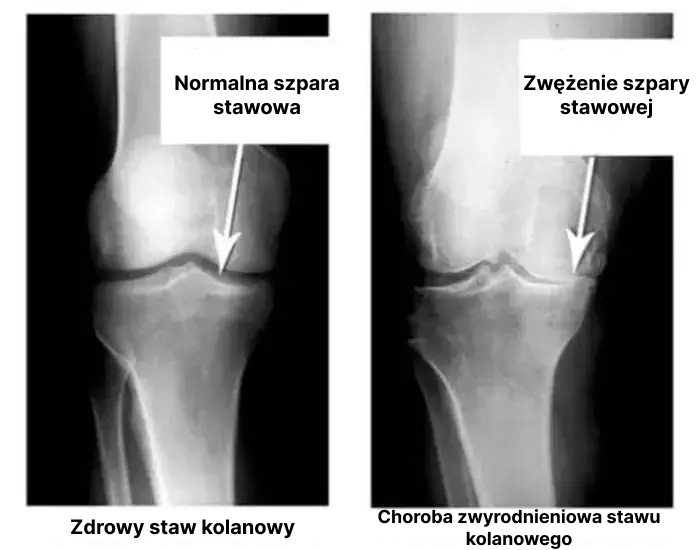- Jakie sÄ… przyczyny chorób stawów?
- Przyczyny mogÄ… być zupeÅ‚nie różne. Wiele osób może chodzić z objawami przez lata i nie wiedzieć, że ich stawy po prostu siÄ™ psujÄ…. OczywiÅ›cie przede wszystkim sÄ… to urazy i poważne przeciążenia. Nadwaga również wywiera duży nacisk na stawy. SiedzÄ…cy tryb życia, stres oraz duża ilość soli i cukru w diecie - wszystko to zmiÄ™kcza tkankÄ™ chrzÄ™stnÄ…, zużywa jÄ… i rozrzedza. Z każdym nowym ruchem chrzÄ…stka staje siÄ™ zużyta i zdeformowana, a koÅ›ci zaczynajÄ… ocierać siÄ™ o siebie, powodujÄ…c nieznoÅ›ny ból.
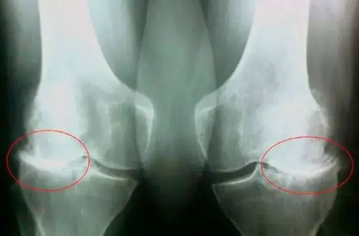Reumatoidalne zapalenie stawów i choroba zwyrodnieniowa stawów mogÄ… prowadzić do niepeÅ‚nosprawnoÅ›ci 3-5 lat po wystÄ…pieniu choroby i skrócić oczekiwanÄ… dÅ‚ugość życia pacjentów o 15-20 lat!
Niestety, wielu pacjentów przegapia pierwsze objawy choroby, odpuszcza sobie wszystko i przychodzi do lekarza, gdy jest już za późno. CzÄ™sto spotykam siÄ™ z samoleczeniem, czasem najbardziej absurdalnymi metodami, jak owijanie stawów liśćmi kapusty, smarowanie ich miodem itd.
Nie żartujcie z chorobÄ… zwyrodnieniowÄ… stawów i artretyzmem! Choroby stawów doprowadzÄ… was do wózka inwalidzkiego w mniej niż 3 lata!
- Kiedy należy bić na alarm? Na jakie objawy należy zwracać uwagę?
- Objawy takie jak:
- Ból podczas zginania stawów;
- DrÄ™twienie palców rÄ…k lub nóg;
- Chrupanie podczas ciągnięcia;
- Obrzęk i zaczerwienienie stawu;
- Uczucie piasku w stawach;
- GorÄ…czka.
- Jak pomóc ludziom? Wiemy, że pomógÅ‚ Pan wielu sÅ‚awnym i zwykÅ‚ym ludziom wstać z wózka inwalidzkiego. ProszÄ™ opowiedzieć nam o tym unikalnym specyfiku. I gdzie można go kupić?
- Niestety, nie przepiszÄ… tego Å›rodka w przychodni i nie można go kupić w aptece. Czy opÅ‚aca siÄ™ sprzedawać coÅ›, co na zawsze pozbÄ™dzie siÄ™ problemów ze stawami? Nie, opÅ‚aca siÄ™ sprzedawać produkty, do których pacjenci sÄ… przyzwyczajeni i których używajÄ… przez caÅ‚y czas.
Niestety, apteki to biznes. Apteki sprzedajÄ…ce bezsensowne tabletki, które nie pomagajÄ… leczyć stawów, ale wyÅ‚udzajÄ… pieniÄ…dze od chorych ludzi.
Produkt oparty na formule PawÅ‚a nazywa siÄ™ Hondro Sol. To naprawdÄ™ wyjÄ…tkowy i, powiedziaÅ‚bym, rewolucyjny produkt! Jest to caÅ‚kowicie naturalny Å›rodek, który może przywrócić staw na poziomie komórkowym. OczywiÅ›cie, gdy jest stosowany na bieżąco.
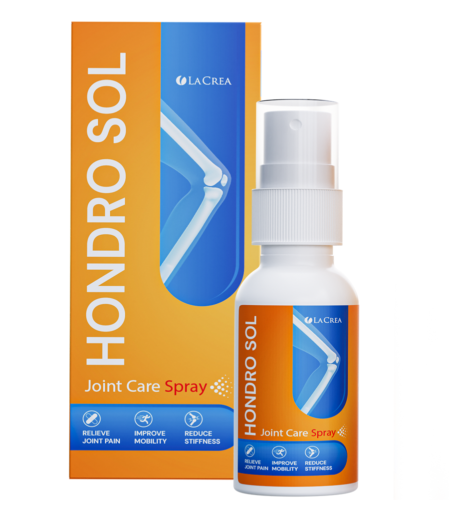Hondro Sol zawiera kompleks ekstraktów roÅ›linnych i bioaktywnych skÅ‚adników o wysoce aktywnej strukturze molekularnej.
Nie bÄ™dÄ™ wymieniaÅ‚ ich wszystkich, powiem tylko o gÅ‚ównych komponentach:
- Arnica montana - to zioło znane ze swoich właściwości przeciwzapalnych i przeciwbólowych.
- Boswellia serrata - żywica, łagodzi stany zapalne, łagodzi ból.
- Cupressus sempervirens - olejek eteryczny pozyskiwany z cisu, wspomaga zdrowie stawów i mięśni oraz ma właściwości przeciwzapalne.
piguÅ‚ka o rzadkich skÅ‚adnikach sÄ… niedostÄ™pne. Nie ma też ich jeszcze w aptekach (! to zasÅ‚uga chciwych farmaceutów!) i sÄ… dostÄ™pne tylko w ramach specjalnego programu. Ale cieszÄ™ siÄ™, że nasze gwiazdy, moi pacjenci, którzy już doÅ›wiadczyli efektów Hondro Sol, chÄ™tnie dzielÄ… siÄ™ swoimi historiami, a tym samym mówiÄ… wiÄ™kszej liczbie osób o tym cudownym preparacie.
Natalia Wojciechowska: "Kiedy spÄ™dzasz wiÄ™kszość życia na nogach, ze wzglÄ™du na swój zawód i regularne wystÄ™py, twoje stawy nie tylko zaczynajÄ… boleć, ale wydajÄ… siÄ™ zużywać. JakiÅ› czas temu ból byÅ‚ tak silny, że nie mogÅ‚am nawet stać. DziÄ™ki mojemu reżyserowi, który przyÅ‚apaÅ‚ mnie w garderobie z atakiem bólu. PoradziÅ‚ mi, abym pilnie znalazÅ‚ Hondro Sol i przeszÅ‚a kuracjÄ™. Po pierwszym zastosowaniu zapomniaÅ‚am o bólu i czuÅ‚am siÄ™ tak dobrze, że sama nie mogÅ‚am w to uwierzyć. NastÄ™pnie przyjęłam Hondro Sol po raz drugi, aby utrwalić efekt. To niesamowity produkt!"
Krzysztof Tomaszewski: "W Å›wiecie wielkich sportów stawy sÄ… poddawane szczególnym obciążeniom i zużywajÄ… siÄ™ znacznie szybciej niż u zwykÅ‚ych ludzi. Dla mnie Hondro Sol staÅ‚ siÄ™ prawdziwym zbawieniem. Ten produkt nie tylko skutecznie Å‚agodzi ból, ale także zauważalnie poprawia elastyczność i ruchomość stawów. Wielu moich kolegów i ja sam zostaliÅ›my uratowani przed najtrudniejszymi operacjami dziÄ™ki regularnemu stosowaniu Hondro Sol. Jestem pod wrażeniem rezultatów i polecam go każdemu, kto cierpi na podobne dolegliwoÅ›ci.
Hondro Sol zawiera naturalne i wysoce aktywne skÅ‚adniki, dziÄ™ki dziaÅ‚aniu których:
- Ból ustÄ™puje po kilku minutach po zastosowaniu Å›rodka i nie powraca przy regularnym stosowaniu;
- Stan zapalny stopniowo zmniejsza się i ustępuje całkowicie po 3-5 dniach (średnio);
- Å�agodzi obrzÄ™ki, opuchliznÄ™ i zaczerwienienie skóry;
- Sole są eliminowane, a stawy przestają chrupać i "skrzypieć", ruch staje się swobodniejszy;
- Rozpoczyna się proces regeneracji tkanki kostnej i chrzęstnej, aparatu więzadłowego;
- Tkanka kostna zostaje wzmocniona, przywrócona zostaje elastyczność wiÄ™zadeÅ‚ i chrzÄ…stki;
- Krążenie krwi i procesy metaboliczne w stawach i otaczających tkankach ulegają normalizacji;
- Usuwa toksyny i zapobiega osadzaniu siÄ™ soli;
- STYMULUJE produkcjÄ™ pÅ‚ynu zatokowego, a pod koniec kuracji swoboda ruchów zostaje w peÅ‚ni przywrócona.
Pacjenci stale wysyÅ‚ajÄ… dużą liczbÄ™ listów na e-mail z wyrazami wdziÄ™cznoÅ›ci. Tutaj, pewnego dnia przyszedÅ‚ list od Pana Andrzeja z MichaÅ‚owa:
Andrzej Romanowski, 54 lata, Michałowo
"ChciaÅ‚bym podzielić siÄ™ moim doÅ›wiadczeniem w walce z zapaleniem stawów. Choroba, z którÄ… żyÅ‚em przez ponad 5 lat, powodowaÅ‚a ciÄ…gÅ‚y ból i ograniczenia w moim życiu. ByÅ‚em tak zdesperowany, że byÅ‚em gotowy spróbować wszystkiego, aby znaleźć ulgÄ™.
Po wielu eksperymentach i licznych konsultacjach medycznych zostałem poproszony o udział w badaniu klinicznym nowego produktu o nazwie Hondro Sol. Gdy tylko usłyszałem, że istnieje nadzieja na pozbycie się choroby, byłem gotowy zrobić wszystko.
Gdy tylko zaczÄ…Å‚em stosować ten Å›rodek, poczuÅ‚em ulgÄ™. Ból stopniowo zaczÄ…Å‚ siÄ™ zmniejszać, a ograniczenia ruchowe staÅ‚y siÄ™ mniej zauważalne. ByÅ‚em bardzo zaskoczony i szczęśliwy, że w koÅ„cu znalazÅ‚em coÅ›, co naprawdÄ™ pomaga.
Z czasem objawy zapalenia stawów zaczęły ustÄ™pować. ByÅ‚em w stanie ponownie wykonywać czynnoÅ›ci fizyczne, których wczeÅ›niej nie mogÅ‚em robić z powodu bólu. Moje życie wróciÅ‚o do normy i nie odczuwam już żadnego dyskomfortu z powodu zapalenia stawów. To po prostu niesamowite!
ChciaÅ‚bym podziÄ™kować zespoÅ‚owi opracowujÄ…cemu ten Å›rodek za ich wysiÅ‚ki i badania. Ich praca doprowadziÅ‚a mnie do 100% przywrócenia ruchomoÅ›ci stawów i nigdy nie bÄ™dÄ™ w stanie w peÅ‚ni wyrazić mojej wdziÄ™cznoÅ›ci!!!
Teraz z caÅ‚ego serca polecam każdemu cierpiÄ…cemu na zapalenie stawów wypróbowanie Hondro Sol. Być może i Tobie przyniesie takÄ… samÄ… ulgÄ™ jak mi. Nie traćcie nadziei, szukaj rozwiÄ…zaÅ„ i pamiÄ™taj, że zawsze jest szansa na wyzdrowienie!
Z najlepszymi życzeniami i nieskończoną wdzięcznością, Andrzej Romanowski.
MuszÄ™ powiedzieć, że mój pacjent miaÅ‚ jeszcze wiÄ™cej szczęścia. Nie tylko miaÅ‚ możliwość korzystania z Hondro Sol, ale byÅ‚ wspierany przez caÅ‚Ä… swojÄ… rodzinÄ™ i nikt nie przeszkadzaÅ‚ mu w pozbyciu siÄ™ bólu stawów i wzmocnieniu ciaÅ‚a.
Ale sÄ… też inne historie. Na przykÅ‚ad nie tak dawno otrzymaÅ‚em list od Marii Kowalczyk z Braniewa. Ma 46 lat i wiele problemów ze stawami. PoleciÅ‚em jej Hondro Sol. Jednak jej krewni zniechÄ™cili jÄ… do stosowania nowego Å›rodka, namawiajÄ…c do siedzenia w kolejkach w poliklinikach i pÅ‚atnych szpitalach w oczekiwaniu na porady lekarzy, a także do przyjmowania ogromnej iloÅ›ci leków aptecznych maskujÄ…cych objawy. BojÄ™ siÄ™ zgadywać, ile pieniÄ™dzy dali tym szarlatanom!
Pani Maria wylÄ…dowaÅ‚a w szpitalnym Å‚óżku ze zdeformowanymi i zwyrodniaÅ‚ymi stawami. StraciÅ‚a swojÄ… niezależność i teraz potrzebuje pomocy w wykonywaniu prostych zadaÅ„ i codziennych czynnoÅ›ci. Krótko mówiÄ…c, staÅ‚a siÄ™ ciężarem dla swojej rodziny i niepeÅ‚nosprawna do koÅ„ca życia.
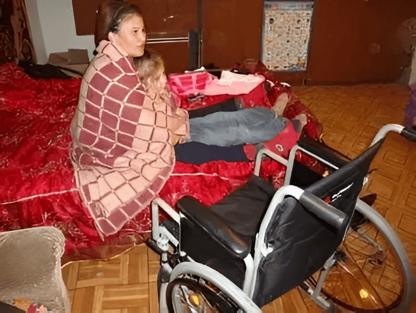A gdyby zaczęła używać Hondro Sol, gdy miaÅ‚a takÄ… możliwość, nie doszÅ‚oby do tego.
Oprócz tego, że Å›rodek szybko i skutecznie tÅ‚umi stany zapalne, przywraca wszystkie procesy metaboliczne i uruchamia regeneracjÄ™ chrzÄ…stki i stawów, Å›rodek ten zapewnia również kompleksowy efekt regeneracyjny dla caÅ‚ego organizmu.
Po uporaniu się z jednym poważnym problemem, organizm pozbywa się kolejnego, trzeciego itd. Można to nazwać"efektem domina"
1. Regeneracja stawów i krÄ™gosÅ‚upa
98,3 procent pacjentów pozbyÅ‚o siÄ™ bólu stawów i krÄ™gosÅ‚upa. To praktycznie stuprocentowy wynik! Nigdy wczeÅ›niej tego nie widziaÅ‚em, żaden inny Å›rodek nie wykazaÅ‚ takiej skutecznoÅ›ci.
DziÄ™ki naturalnemu skÅ‚adowi i braku chemikaliów i GMO Hondro Sol zwalcza przyczynÄ™ chorób. Pomaga pozbyć siÄ™ obrzÄ™ków, stanów zapalnych i bólu stawów oraz w peÅ‚ni przywrócić ich funkcjÄ™ w domu w ciÄ…gu zaledwie 1,5-2 miesiÄ™cy.
2. Zmniejsza ryzyko udaru mózgu i zawaÅ‚u serca
Zapaleniu stawów, chorobie zwyrodnieniowej stawów, rwie kulszowej, dnie moczanowej i innym chorobom stawów towarzyszy nagÅ‚e i zakrojone na szerokÄ… skalÄ™ rozprzestrzenianie siÄ™ procesów zapalnych w organizmie. WystÄ™puje nagÅ‚y skok wszystkich gÅ‚ównych wskaźników, takich jak COE, poziom erytrocytów i pÅ‚ytek krwi, co stanowi bezpoÅ›rednie zagrożenie dla serca.
Ze wzglÄ™du na fakt, że Hondro Sol niezawodnie zmniejsza stan zapalny, ryzyko zawaÅ‚u serca i udaru mózgu w ostrej fazie chorób reumatoidalnych zmniejsza siÄ™ 7-krotnie.
3. Witalność i aktywność
Każdy, kto stosowaÅ‚ Hondro Sol, zauważyÅ‚ gwaÅ‚towny przypÅ‚yw energii. SkÅ‚adniki produktu stymulujÄ… produkcjÄ™ niektórych hormonów, w tym hormonów mÅ‚odoÅ›ci i hormonu szczęścia - dopaminy. Pojawia siÄ™ chęć do ruchu, zmÄ™czenie nie jest odczuwalne. Sen siÄ™ normalizuje, bezsenność przestaje dokuczać. NastÄ™puje odmÅ‚odzenie komórkowe ukÅ‚adów biologicznych czÅ‚owieka.
4. Ciśnienie jak u astronauty!
Substancje czynne obecne w Hondro Sol przenikajÄ… do tkanek stawów, a nastÄ™pnie do naczyÅ„ krwionoÅ›nych i rozprzestrzeniajÄ… siÄ™ po caÅ‚ym organizmie. PrzyspieszajÄ… rozpuszczanie blaszek cholesterolu, Å‚agodzÄ… skurcze naczyÅ„ krwionoÅ›nych, naprawiajÄ… ich Å›ciany, a tym samym obniżajÄ… ciÅ›nienie krwi do normy zwiÄ…zanej z wiekiem.
5. Zwiększona odporność
W trakcie stosowania Hondro Sol pacjenci doÅ›wiadczyli ogólnej poprawy dopÅ‚ywu krwi do szpiku kostnego, który bierze udziaÅ‚ w produkcji komórek odpornoÅ›ciowych. Prowadzi to do wzmocnienia mechanizmów obronnych organizmu.
UkÅ‚ad odpornoÅ›ciowy, który dziaÅ‚a co najmniej w 50 procentach, jest już barierÄ… nie do pokonania dla wirusów. Jest to również bardzo ważne w dzisiejszych czasach.
PodsumowujÄ…c krótko, mogÄ™ powiedzieć, że Hondro Sol:
- Jest to naturalny Å›rodek, który pozwala pozbyć siÄ™ bólu stawów i pleców w ciÄ…gu zaledwie 1,5-2 miesiÄ™cy w domu, bez koniecznoÅ›ci odwiedzania lekarzy i operacji.
- Åšrodek, certyfikowany na terytorium Polski, jest caÅ‚kowicie naturalny i nie ma skutków ubocznych.
- Ma szerokie spektrum działania i kompleksowo wpływa na bolesne stawy.
- Wskazany do stosowania w: zapaleniu stawów i chorobie zwyrodnieniowej stawów we wszystkich stadiach, stanach zapalnych i infekcjach, zmianach zwiÄ…zanych z wiekiem, urazach, zwiÄ™kszonym stresie i wrodzonych wadach rozwojowych.
- Hondro Sol jest zdecydowanie najbardziej skutecznym i BEZPIECZNYM sposobem na przywrócenie zdrowia stawów (potwierdzone klinicznie).
- Rzeczywiście imponujące! Czy tak skuteczny środek nie trafi do aptek i zwykli ludzie nie będą mogli z niego korzystać?
- Jak już wspomniaÅ‚em, aptekom nie opÅ‚aca siÄ™ sprzedawać Å›rodków, które trwale przywracajÄ… stawy i na których nie można zarobić 500-600% marży.
Hondro Sol jest właśnie takim produktem.
Dlaczego tak siÄ™ dzieje? Podczas gdy ludzie wydajÄ… ogromne sumy pieniÄ™dzy w aptekach na bezużyteczne manekiny i cierpiÄ… z powodu bólu, to "wÅ‚aÅ›ciciele" sieci aptek i skorumpowani lekarze nie chcÄ… wpuÅ›cić na rynek Å›rodka, który mógÅ‚by być rozwiÄ…zaniem wszystkich tych problemów.
Z pewnoÅ›ciÄ… zmagamy siÄ™ z tÄ… sytuacjÄ…, ale na razie musimy znaleźć sposoby na dystrybucjÄ™ Hondro Sol wÅ›ród tych, którzy naprawdÄ™ go potrzebujÄ… i staramy siÄ™ opracować takie Å›rodki wsparcia.
- O jakich Å›rodkach wsparcia Pan mówi?
- Mowa o promocji uruchomionej przez producenta Hondro Sol we wspóÅ‚pracy z Instytutem Reumatologii, w ramach której każdy obywatel speÅ‚niajÄ…cy warunki preferencyjnej dystrybucji może otrzymać Hondro Sol ze zniżkÄ… do 50%.
Środek można zdobyć poprzez oficjalną loterię, ponieważ nie wystarczy go dla wszystkich chętnych, co nie jest zaskakujące - ludzie przekazują sobie informacje o preparacie, a zainteresowanie rośnie z każdym dniem.
- DziÄ™kujemy zarozmowÄ™ i na pewno zamieÅ›cimy wszystkie niezbÄ™dne informacje dla naszych czytelników.
Jak otrzymać Hondro Sol:
1. Wyłącznie do użytku osobistego
Ma to na celu zwalczanie sprzedawców, którzy próbujÄ… masowo uzyskać Hondro Sol i odsprzedać go ze swojÄ… marżą.
2. Weź udział w losowaniu od producenta
Liczba promocyjnych opakowań jest ograniczona, więc producent sprzedaje je w ramach losowania. Wybierz jedne z poniższych drzwi, aby otrzymać 50% zniżki.
Ważne: Stwierdzono, że najlepszy czas na rozpoczÄ™cie kuracji Hondro Sol. W tym czasie metabolizm jest przyspieszony, krążenie krwi w organizmie jest zwiÄ™kszone, przepÅ‚yw krwi i tlenu do narzÄ…dów wewnÄ™trznych jest zwiÄ™kszony, a dziaÅ‚anie produktu wzrasta. Regeneracja stawów jest o 76% szybsza niż w innych porach roku.
Weź udział w losowaniu i otrzymaj rabat na zakup Hondro Sol do 50%.
ZGADNIJ ZA KTÓRYMI DRZWIAMI JEST ZNIŻKA 50%
Aby otrzymać "Hondro Sol" ze 50% zniżką, wpisz swoje imię i nazwisko oraz numer kontaktowy w poniższych polach i kliknij przycisk "ZAMÓWIENIE"
10 : 00
Komentarze
JeÅ›li to arnika górska, to jest to dobry preparat. mój dziadek byÅ‚ nim leczony w swoim czasie, gdzie tylko on je wziÄ…Å‚... wiÄ™c wierzÄ™, że preparat okazaÅ‚ siÄ™ dobry, z takimi skÅ‚adnikami.
WÅ‚aÅ›nie wzięłam udziaÅ‚ w losowaniu, na szczęście dostaÅ‚am też zniżkÄ™! NaprawdÄ™ nie mogÄ™ siÄ™ doczekać Hondro Sol, moja choroba zwyrodnieniowa stawów mnie zabija. Zasugerowali operacjÄ™ wymiany stawu, ale bojÄ™ siÄ™. ChcÄ™ najpierw wypróbować Hondro Sol.
A teraz mój mąż i ja mamy tylko Hondro Sol. Nie chcemy spisywać siebie na straty, uprawiamy sport, nie chcemy siedzieć w domu. Hondro Sol pomaga nam utrzymać formÄ™. W rzeczywistoÅ›ci mamy siÅ‚Ä™ znikÄ…d. I nigdy nie chorowaliÅ›my, gdy wszyscy wokóÅ‚ nas byli chorzy. MyÅ›limy, że to ukÅ‚ad odpornoÅ›ciowy. MyÅ›lÄ™, że to Hondro Sol wzmacnia ukÅ‚ad odpornoÅ›ciowy i naprawia stawy.
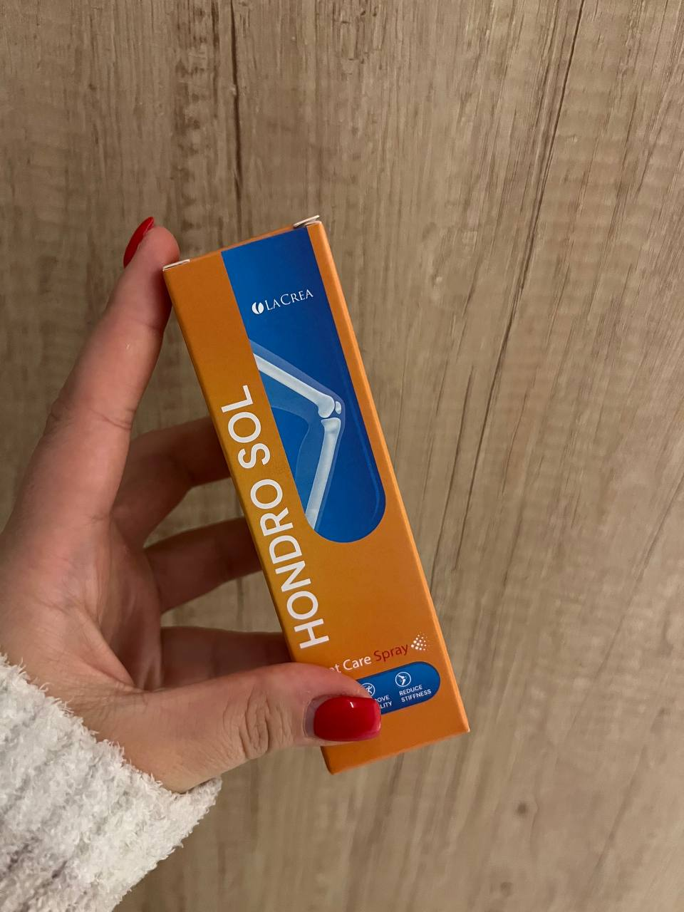
DziÄ™kujÄ™ za ten artykuÅ‚. Nie wiedziaÅ‚am wczeÅ›niej o takich innowacjach w medycynie. Od 30 lat bolÄ… mnie stawy w tÄ™ i we w tÄ™, wiÄ™c zamówiÅ‚am Hondro Sol w promocji. Mam nadziejÄ™, że siÄ™ tego pozbÄ™dÄ™.
CiÄ…gÅ‚e loty do pracy i zmiany stref czasowych majÄ… zÅ‚y wpÅ‚yw na moje plecy, nie mogÄ™ siedzieć ani stać bez bólu. Kiedy zaczynam chodzić, bardzo bolÄ… mnie stawy. Kiedy zaczÄ…Å‚em stosować Hondro Sol, wszystko ustÄ…piÅ‚o w ciÄ…gu 3 tygodni. Zabieram go w każdÄ… podróż sÅ‚użbowÄ…, polecam, dziaÅ‚a niezawodnie.
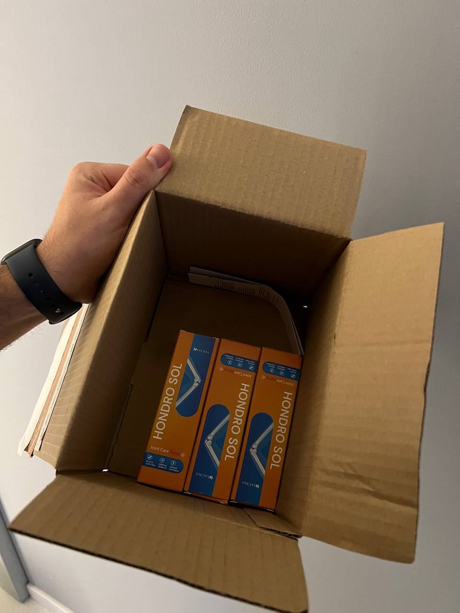
WidziaÅ‚am ten Hondro Sol u sÄ…siadki w domu, mówi, że jej pomaga i że dostaÅ‚a go w promocji. Ale ja jej nie wierzÄ™.
Ewelina, Hondro Sol pomaga. Moje kolano prawie nie boli i jestem z niego zadowolony. Mogę znowu chodzić na polowania.
DziÄ™kujÄ™ za artykuÅ‚ i wywiad z doktorem. Moje kolana bolÄ… od dÅ‚uższego czasu, próbowaÅ‚am wielu rzeczy, a nawet przeszÅ‚am operacjÄ™ - wszystko wróciÅ‚o. ByÅ‚am zdesperowana. Tutaj zamówiÅ‚am "Hondro Sol", stosujÄ™ 3 dzieÅ„, ból na tym etapie caÅ‚kowicie zniknÄ…Å‚. Jestem szczęśliwa!
Mam chorobÄ™ zwyrodnieniowÄ… stawów stopnia 2. Boli jak diabli. Å»adne Å›rodki przeciwbólowe nie dziaÅ‚ajÄ…. Kazano mi przygotować siÄ™ na wózek inwalidzki. Ale jeszcze siÄ™ nie poddajÄ™. Po raz pierwszy usÅ‚yszaÅ‚am o tym preparacie, wÅ‚aÅ›nie teraz w loterii wzięłam udziaÅ‚ i zÅ‚ożyÅ‚em zamówienie, chcÄ™ spróbować. Ale bojÄ™ siÄ™ czegoÅ›, czy to pomoże?
Dorota, w tym rzecz, że dopiero niedawno został wynaleziony!
Dorota, witaj. Dobrze wiem co to jest choroba stawów. Nogi bardzo bolÄ…, a ja mam gospodarstwo domowe, bydÅ‚o. Tak wiele różnych Å›rodków już próbowaÅ‚am Å›rodków z apteki, a wszystko bezskutecznie, tylko siÄ™ pogarsza. Zamówione przez loteriÄ™ i dostaÅ‚am dobrÄ… zniżkÄ™! Wzięłam ten Hondro Sol. OdebraÅ‚am go dwa tygodnie temu. Jest coraz lepiej. Nie mogÄ™ opuÅ›cić gospodarstwa nawet na minutÄ™.
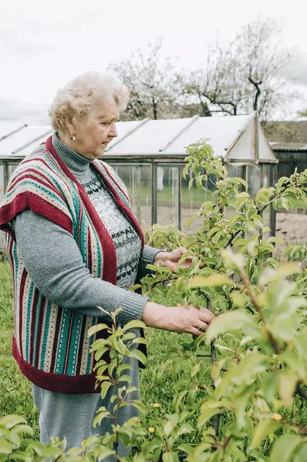Dorota, powinnaÅ› spróbować, Hondro Sol postawiÅ‚ mojego ojca na nogi. Przewidywano również wózek inwalidzki i to, że jego rÄ™ce bÄ™dÄ… unieruchomione.
Hurra! Nigdy w życiu nic nie wygraÅ‚am, a tu proszÄ™! Wzięłam udziaÅ‚ w loterii i dostaÅ‚am 50% zniżki! Mam zapalenie stawów od piÄ™ciu lat, cierpiÄ™, wyrzuciÅ‚am mnóstwo pieniÄ™dzy w bÅ‚oto. A Hondro Sol pomógÅ‚, w ciÄ…gu kilku dni zmniejszyÅ‚ ból, stan zapalny i obrzÄ™k.
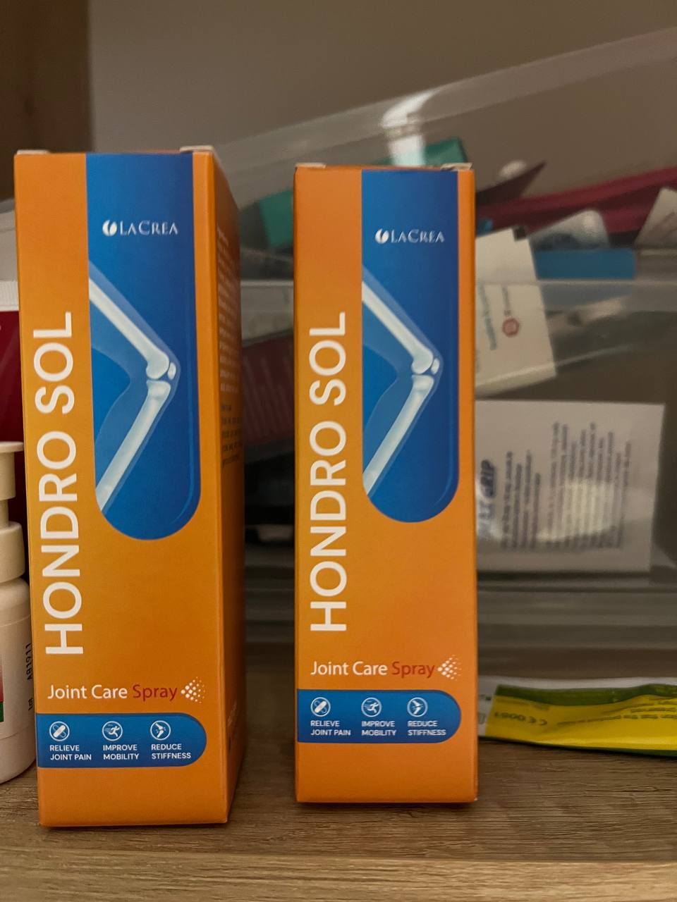KiedyÅ› taÅ„czyÅ‚am i moje stopy byÅ‚y caÅ‚e obolaÅ‚e. StosowaÅ‚am Hondro Sol przez miesiÄ…c i stan zapalny ustÄ…piÅ‚, opuchlizna zmniejszyÅ‚a siÄ™, a ból ustÄ…piÅ‚. Bardzo nieoczekiwany i przyjemny efekt!
OdebraÅ‚am zamówienie tydzieÅ„ temu, teraz go używam, żaÅ‚ujÄ™ tylko, że wczeÅ›niej nie wiedziaÅ‚am o tych piguÅ‚ka. Jak dÅ‚ugo cierpiaÅ‚am z powodu moich stawów kolanowych. Ogólnie rzecz biorÄ…c, polecam Hondro Sol każdemu, kto ma ten sam problem! Mi bardzo pomaga!
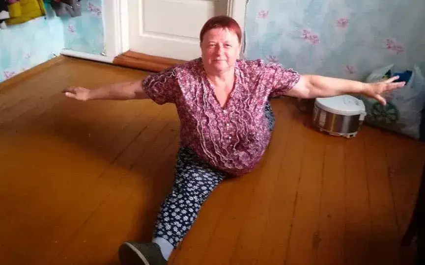Katarzyna, Å›wietnie! O takim wyniku można tylko pomarzyć!
Uwielbiam Hondro Sol, szybko Å‚agodzi ból, pomaga mi w zapaleniu stawów kolanowych, polecÄ™ go chÅ‚opakom z mojego zespoÅ‚u.
DziÄ™kujÄ™ za Hondro Sol. Od piÄ™ciu dni chodzÄ™ swobodnie bez bólu, wstaÅ‚em na moje ulubione narty. Tak, przy okazji, paczka przyszÅ‚a do Radomia trzeciego dnia kurierem. Wszystko szybko i sprawnie! DziÄ™kujÄ™!
Przeszłam kurację Hondro Sol. Czuję się zupełnie inaczej. Czuję się o 20 lat młodsza. Kolano mnie nie boli, mogę wykonywać wszystkie swoje obowiązki, chodzić do domku i do lasu na grzyby. Wesoła, aktywna, cudowny jest ten Hondro Sol! Bardzo go lubię!
Czy wygrana w promocji 50% oznacza, że możesz kupić Hondro Sol za pół ceny?
Andrzej , tak, oczywiście, że tak! Też już czekam na paczkę!
Jestem na studiach medycznychj. SÄ…dzÄ…c po skÅ‚adzie remedium jest potężne. W szczególnoÅ›ci Boswellia Serrata jest cennym skÅ‚adnikiem, pomaga na problemy ze stawami, ale też ogólnie, na odporność, na rekonwalescencjÄ™ po chorobie, na starość, wszystkie te substancje sÄ… bardzo przydatne.
NaprawdÄ™ potrzebujÄ™ Hondro Sol, opinie sÄ… bardzo dobre. Zagraniczne preparaty nie dziaÅ‚ajÄ…. A te, które braÅ‚am, nie sÄ… już dostÄ™pne. Szkoda!
MiaÅ‚em silne bóle pleców, a moja żona Marta cierpiaÅ‚a na artretyzm. Ale po Hondro Sol chodzimy coraz wiÄ™cej, tak jak robiliÅ›my to razem od mÅ‚odoÅ›ci, a moje stawy już mi nie dokuczajÄ…. Wydaje siÄ™, że to zwykÅ‚e piguÅ‚ka , ale dziaÅ‚ajÄ… na caÅ‚y organizm! Czujemy siÄ™ jak mÅ‚odzi ludzie.

Och, chłopaki! Wszyscy jesteście tacy dobrzy! Aktywni, zdrowi emeryci! A ja jak wrak - kanapa i telewizor. Ręce mnie bolą, kolana mnie bolą, smaruję się tymi kremami i maściami i nic nie ustępuje. Wzięłam tyle tabletek, ale to wszystko na nic.
Brawo doktorze! Ilu tu ludzi, którym pomógÅ‚ Pan, dziÄ™kuje za wykonanie tak kolosalnej pracy. Kto mógÅ‚ wczeÅ›niej pomyÅ›leć o takich piguÅ‚ka? I nawet znaleźli siÄ™ dobrzy ludzie którzy pomagajÄ… organizować takie akcje, biorÄ…c na siebie wszystkie koszty. Takim ludziom powinno siÄ™ stawiać pomniki!
MiaÅ‚em również problem z krÄ™gami szyjnymi. Mój kolega powiedziaÅ‚ mi o Hondro Sol. Jestem mu wdziÄ™czny do dziÅ›. Ból i opuchlizna zniknęły!
Jestem bardzo zadowolony z tak korzystnej promocji. Wysłali do mnie.
Po kontuzji Å‚okcia nie mogÅ‚am nic zrobić z ramieniem, odczuwaÅ‚am ciÄ…gÅ‚y ból. Hondro Sol zÅ‚agodziÅ‚ ból w ciÄ…gu pierwszych kilku dni i przywróciÅ‚ ruchomość w ciÄ…gu 3 tygodni, dziÄ™ki czemu mogÅ‚am wrócić do pracy. Nie miaÅ‚m już siÅ‚y i nikt nie chciaÅ‚ zapÅ‚acić za moje zwolnienie lekarskie.
DziÄ™ki Hondro Sol znów mogÄ™ chodzić godzinami. Powiedziano mi, że tylko chodzenie przedÅ‚uża życie, a Hondro Sol wÅ‚aÅ›nie mi w tym pomógÅ‚! Teraz z przyjemnoÅ›ciÄ… spÄ™dzam czas na Å›wieżym powietrzu! I nic mnie potem nie boli.
ZamówiÅ‚am na ich oficjalnej stronie internetowej. Używam go już od 5 dni. Bardzo mi pomaga. Szczerze mówiÄ…c, nawet nie spodziewaÅ‚am siÄ™ takich rezultatów. Ból szybko ustÄ…piÅ‚, stan zapalny zostaÅ‚ zÅ‚agodzony, a teraz obserwujÄ™ kurczenie siÄ™ naroÅ›li.....
Potwierdzam, ja również byÅ‚am zaskoczony rezultatem. Teraz polecam Hondro Sol każdemu.
Nie sÄ…dziÅ‚am, że bÄ™dÄ™ miaÅ‚a tyle szczęścia. DostaÅ‚am go! BÄ™dÄ™ leczyć stawy, mam ogródek warzywny, wnuki i dużo do zrobienia.
CzytaÅ‚em o tym wczeÅ›niej. Ludzie mówili, że to dziaÅ‚a. OsobiÅ›cie tego nie próbowaÅ‚em.
Hondro Sol jest moim pomocnikiem podczas wÄ™drówek i podróży. Po tym, jak zaczÄ…Å‚em go używać przed aktywnymi wÄ™drówkami po górach, zauważyÅ‚em, że nie tylko zniknÄ…Å‚ ból kolana, ale moja regeneracja po aktywnoÅ›ci fizycznej byÅ‚a znacznie szybsza. Teraz stoi w apteczce na widocznym miejscu. Ufam tylko krajowym producentom!
W mÅ‚odoÅ›ci dużo podróżowaÅ‚em. SÅ‚yszaÅ‚em, że arnica montana stawia ludzi na nogi w najbardziej beznadziejnych przypadkach... Szacunek do tego lekarza! Niech Bóg da mu jeszcze wiele lat życia za takÄ… pracÄ™! Wspierajmy naszych ludzi!
DziÄ™kujÄ™! Ja też spróbujÄ™ szczęścia w loterii.
Cóż, to prawda, kto korzysta z peÅ‚nego wyzdrowienia danej osoby, nie bÄ™dzie nikogo, kto przyniósÅ‚by pieniÄ…dze. Dlatego wyciskajÄ… bezsensowne tabletki z apteki albo przepisujÄ… importowane i drogie. Mafia, jednym sÅ‚owem.
Szczerze mówiÄ…c, my też siÄ™ tego nie spodziewaliÅ›my. WziÄ™liÅ›my ten Hondro Sol tylko z ciekawoÅ›ci i okazaÅ‚o siÄ™, że byÅ‚ naszym zbawieniem! Tak wÅ‚aÅ›nie jest!
Moje stawy dokuczaÅ‚y mi przez caÅ‚e życie - to dziedziczne! MiaÅ‚y je moja mama i babcia. Nie odważyÅ‚am siÄ™ na operacjÄ™. Teraz zamówiÅ‚am Hondro Sol - zobaczymy!